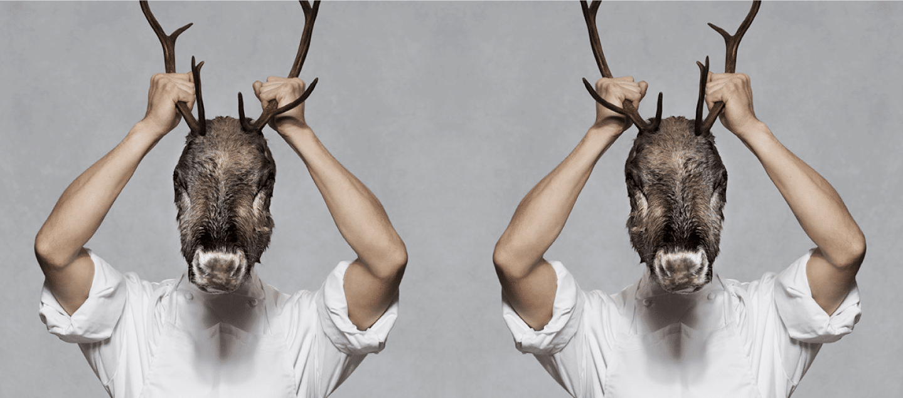
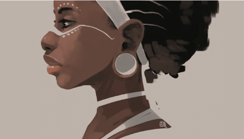
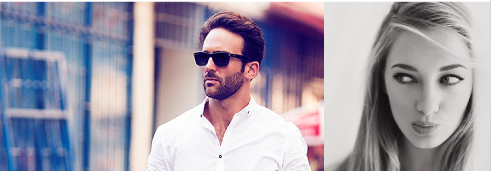
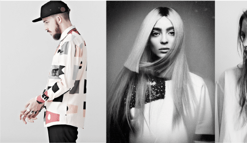
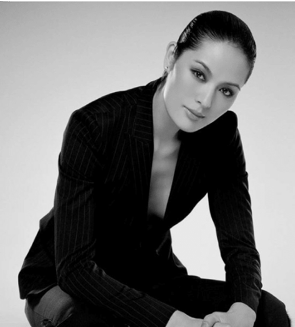
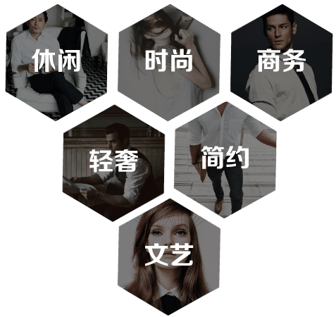
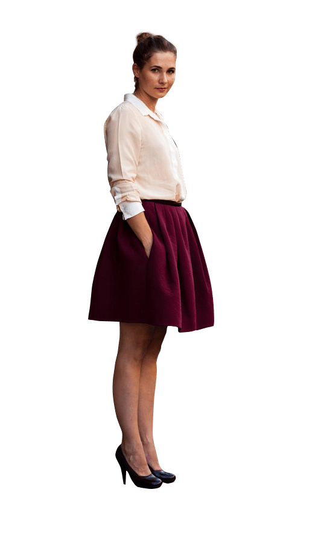
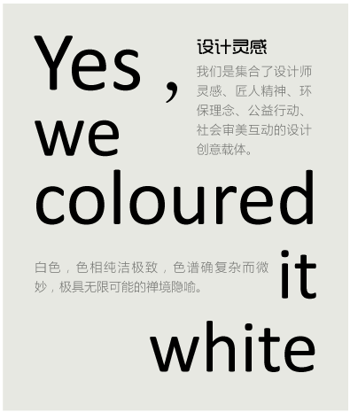
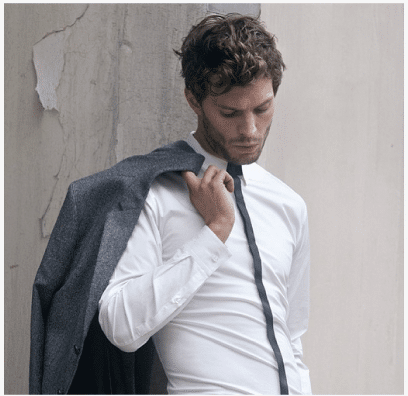

白衬衫工作室
品牌故事
无论男女衣橱中都不可缺少一件白衬衫








品牌精神
用最纯净的心定制最美好的白衬衫
黑田泰藏曾经说过的那句”如果黑色是偶然的颜色，那么白色便是永恒而且接近零。因为想创造零，所以用白色。”
在这里白色概念即作为设计师创做的工具有座位策划语言，引导社会性审美搭配的话题探索。与此同时我们亦致力于以温暖体贴的功能设计、天然优质的材料来呈现品牌的品质与心意。
